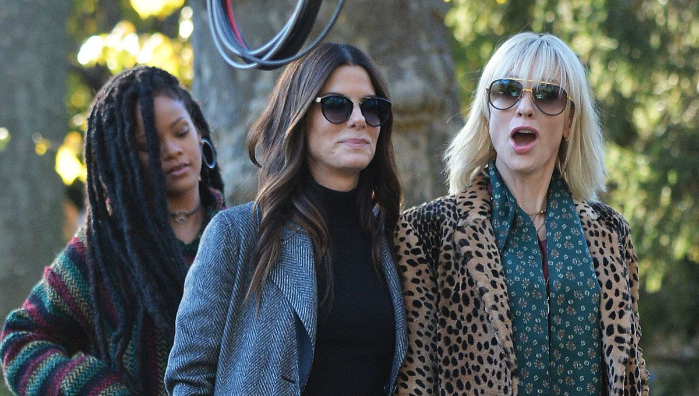
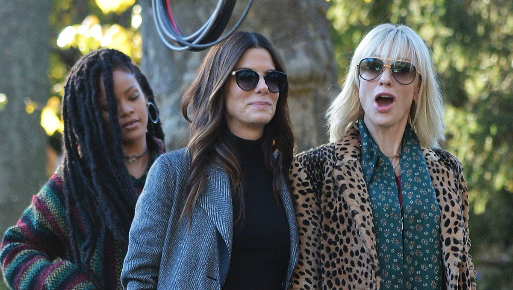

Debbie Ocean gathers an all-female crew to attempt an impossible heist at New York City's annual Met Gala. Following her release from prison, Debbie Ocean, younger sister of the late Danny Ocean, meets with her former partner-in-crime Lou to convince her to join a heist that she planned while serving her sentence. Debbie and Lou assemble the rest of their team: Rose Weil, a disgraced fashion designer who is deeply in debt with the IRS; Amita, a jewelry maker and friend of Debbie's who is eager to move out of her mother's house and start her own life; Nine Ball, a computer hacker; Constance, a street hustler and pickpocket; and Tammy, a profiteer and another friend of Debbie's who has been secretly selling stolen goods out of her family's suburban home. Debbie plans to steal the Toussaint, a $150 million Cartier necklace, from the Met Gala in three-and-a-half weeks, and use Met Gala co-host Daphne Kluger, a famous actress known for her long neck, as an unwitting mule who will wear the necklace into the gala.
 
